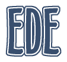

| Equinox Desktop Environment v1.0.3 |
|
 Components of the EDE package are: - edewm: a ICCCM-compliant window manager - eiconman: the "desktop" - eworkpanel: containing taskbar, main menu, clock and many other applets - econtrol: a desktop control panel with several useful applets - einstaller: program (package) installer - efinder: file search program - emenueditor, etimedate etc. Other programs for EDE are under development, such as file manager, multimedia, internet tools, games etc. Tune in to EDE, because it is becoming better every day. Getting helpIf you require further assistance, we advise you to visit:- The EDE Homepage - EDE project page at SourceForge.net The latter web site also contains forums, bug report tool and mailing lists. Get EDE!EDE is improved daily! So if you have problems, it is very possible that they are already fixed. To get the latest EDE version, visit our homepage.You can get EDE from: - distribution-agnostic binary packages (RPM) - it should be possible to install these packages on any distribution produced since January 1st, 2001.; on non-RPM distributions you can install the rpm software or use a tool called "alien" - distribution-specific binary packages - contain optimizations for a specific Linux distribution - source code packages (tar.gz) - you should be able to compile them on any *nix system, including FreeBSD and Solaris; just unpack and use commands ./configure; make; make install - anonymous CVS access - use the following commands to download the latest development version of EDE from our CVS server: cvs -z3 -d :pserver:anonymous@cvs.sourceforge.net:/cvsroot/ede loginWhen you are updating EDE be sure to use the matching version of eFLTK! eFLTK is developing together with EDE, also many bugs are really caused by eFLTK problems, so it is critical that you update eFLTK together with EDE or you might have errors and other problems.
Copyright (c) 2000-2005. EDE Authors |